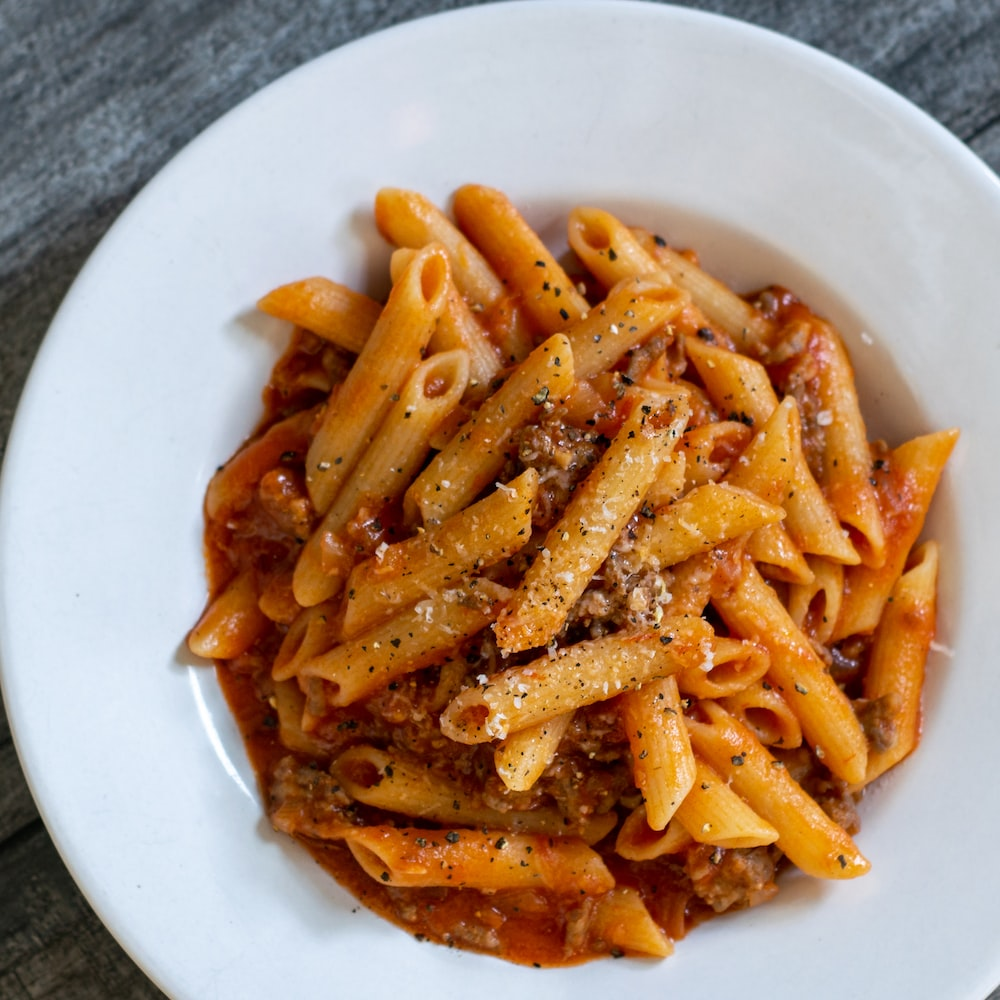

Pasta

PINK SAUCE PERI PERI PASTA - Weekend calls for quick n spicy pasta. Have you tried the trending Peri Peri pasta??
Ingredients
- 2 tsp Oil
- 2 no. Garlic cloves, crushed
- ½ medium Onion, sliced
- 8-10 no. Mushrooms (washed & cut into half)
- 1 cup Prepared Peri Peri Sauce
- ¼ cup water
- Salt to taste
- 2 cups Boiled Pasta
- ¼ cup Fresh cream
- ¼ cup Cheese, grated
- 1 tsp extra Virgin Olive oil
- 2-3 no. Cherry tomatoes, cut into half
- 2-4 no. Basil leaves, roughly torn
- Lemon Zest
Process
- In a pan, heat oil, add garlic cloves, onion and saute for a minute.
- Add mushrooms and toss it for 1-2 minutes on high flame.
- Add prepared peri peri sauce and cook it well for a while.
- Add water, salt to taste and let it simmer for a minute.
- Add boiled pasta and toss it well.
- Finish it with fresh cream, cheese, extra virgin olive oil, cherry tomatoes, basil leaves and mix it well.
- Transfer it to a serving dish, garnish it with lemon zest, cheese and basil leaves.
- Serve hot.
Return to top
Return to main page